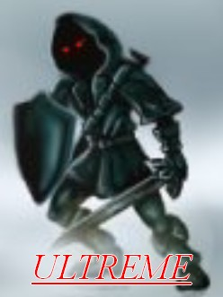

Forums galactiques > Taverne galactique : lieu de discussion informel > salle de paint ball
Pages : 1 2
| darklink  11/04 ETU 21:14 | Darklink que la fatigue obstruait la vue trebucha sur dranach et se fit bombarder. Il eut juste le temps de voir l'orc avant de s'evanouir. |
Dranach 11/04 ETU 21:17 | Pouvez pas regarder devant vous,enfin! Dranach se tourna et envoya un tir précis entre les yeux de l'orc,qui,aveuglé,courut en rond et se prit les murs |
talrash 11/04 ETU 21:43 | heuresement, ayant construit tout sa de ses propore main il se dirigeat ver l'etendu d'eau et si nettoya le visage. il prt alors une petit arme cache, qui se nome silfateuse a peinture. il commenca alors a asperge les 3/4 de l'arene en touchant tous les concurent d'une pluie de peinture rouge et verte... tous etait repeinte de la tete au pied! |
guitell 12/04 ETU 07:54 | Guitell voyant la superiorite de l'arme de tarlash lui courut dessus et aracha l'arme avec sees crocs et il alla se netoyer malheureusement l'eau provoqua un court circuit(oups il va pas etre content je lui ai toute casse ) |
talrash12/04 ETU 18:53 | (court criduit de quoi, sa marche au gaz pas a l'electricite) l(orc reprit sont fusil legerement mouille, puis repeigne l'arier train de guitell, malheuresement trop proche lequel etait bleu pas les boule de peinture et rouge a cause de la puissance de celle si! vilain chien... si tu l'avais demande je t'en aurait filé une (si c'est pas pour me tiré dessu :D) |
le Grand Emporium 12/04 ETU 22:40 | Mikrakosus entra dans la salle, équipé d'un (très) long fusil à lunette télescopique. Il grimpa à un endroit surélevé et bien caché, puis visa Talrash, étant la cible la plus facile à toucher... |
talrash14/04 ETU 16:52 | (hrp c'est moi quio fourni les fusil, il y a que moi qui peut tricher emporium héhéhé) talrash ayant vu d'ou parte le tire visa puis tira une centaine de bille de peinture... a un mur repeint 1. un petit bruitsec se fit entendre.. clinc ... ... ... ... ... SPLATCH(grenade) et 1 mec repeint 1 |
Pages : 1 2
Forums galactiques > Taverne galactique : lieu de discussion informel > salle de paint ball